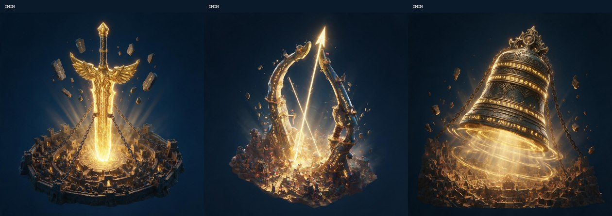
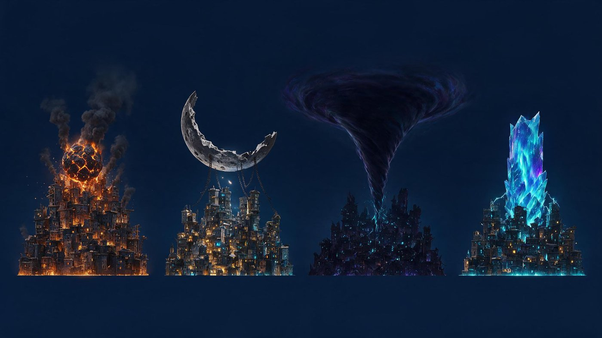
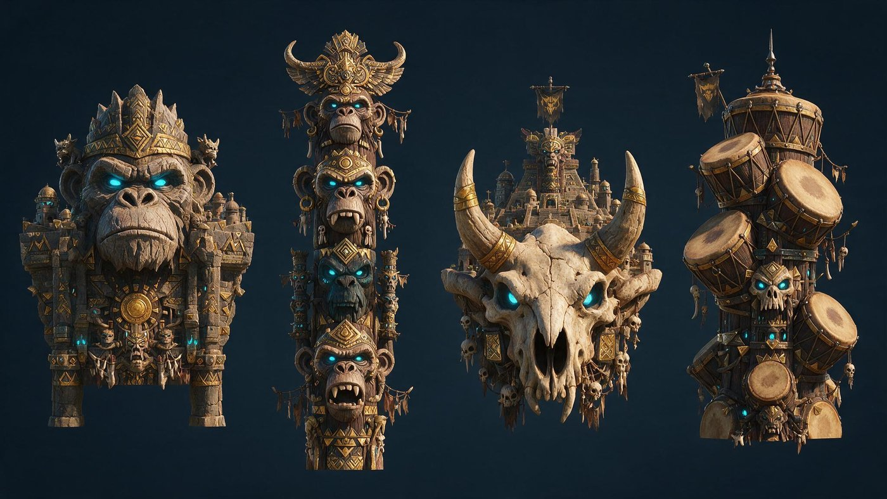
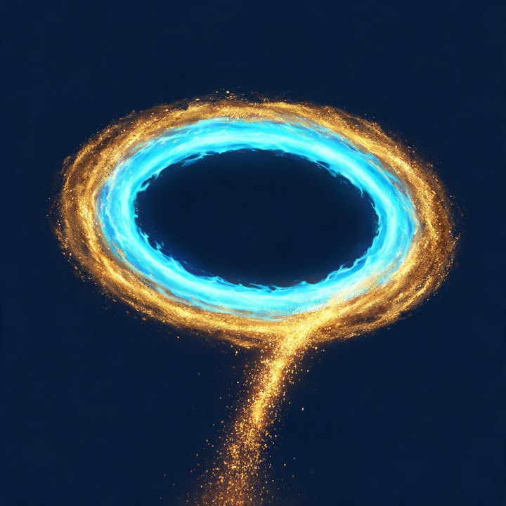

先把两件事纠正过来
① 同品质，没有好坏差别。之前我给城基和本体排了稀有度阶梯（低/中/高/最高），错了。 改成全部同品质、统一出帅出炫——每一款都要能独立撑起一座城，不存在「这款是垫底的」。 这带出三个连锁问题，解法在页尾。
② 别搞传统。上一版的锈铁台 / 装甲基 / 石遗迹 + 工厂 / 星舰 / 高塔，是常规主城语言，不炫。 下面四个方向全部往「非建筑主体」走。武器那版已按你说的神器风重做（原钢铁兵器版作废）。
方向 A · 神器你给的方向 · 已按「神器风」重做

神器风改了三件事：① 材质从钢铁改成光铸 + 流转符文； ② 加供奉关系 —— 城是围着神器建的聚落，神器在中心、城在周围， 「城感太弱」这个问题反而变成了优势；③ 四款是四种神器姿态（插 / 贯 / 张 / 悬）， 不是四种兵器种类，辨识度更高。
→ 神器风还有一个额外好处：「被封印的神器」自带故事， 后续每期出新神器时，文案可以顺着「这次挖出来的是什么」往下写，不用每期从零编题材。
⚠ 出图暴露两个必须先定的约束（不定的话美术会做错）
① 神器本体不能连地基一起做。神器风的逻辑是「城围着它建成祭坛」， 所以 AI 出图时把完整的城 + 圆形地基（甚至一整个岛）都画进来了。 但本体的形态约束是「只做上半段、底面平切、装到城基上」—— 正确做法：神器本体 = 神器主体 + 脚下一圈祭坛式建筑环，底面平切，不做地基、不做岛。 下半段照旧由城基提供。这条不写清，美术交来的资源装不上城基。
② 城里的小旗不能做真实国旗。张弦神弓那张放大看，聚落里有若干三色小旗 （意 / 法 / 秘鲁那类）。旗帜是真实国旗的高发位，之前的组合图也踩过一次。 美需里要明确：旗标只用猿族纹章与部落图案，禁止任何真实国旗与国家标识。
方向 C · 天体异象视觉最独特

方向 D · 图腾面具

我的建议：不要选一个方向，四个方向各取一款
你说了「同品质、没好坏差别」——那用什么来区分四款本体？答案是题材，不是稀有度。 四个方向各出最强的那一款，凑成首期 4 款：
这么做有三个好处：① 四款视觉区分度拉到最大（机械兽 / 天体 / 兵器 / 石雕，玩家一眼分得清， 不会觉得「这四个不都差不多」）；② 同品质这件事立得住 —— 四款是四种口味不是四个档次； ③ 首期就把四个方向的市场反应验证掉，哪个方向卖得好，后续每期就往那个方向加投。
换档抓手也现成了：万象主城是常驻系统，每期要上新款。 方向本身就是换档的抓手 —— 第二期可以「机械巨兽 ×2」，第三期「天体 ×2」， 不用每期从零想题材。
配套底座 3 款 · 三种托举方式
本体换成非建筑主体之后，底座（城基）的角色就明确了：它是「托举装置」—— 不该抢本体的戏，但自己也要炫。三款给三种完全不同的托举语言，色相刻意拉开， 三款摆在一起要一眼分得清。
颜色：深灰玄武岩 + 青蓝推力光 + 少量金色矿脉
动态：碎石绕行、喷口脉动、岩台极轻微起伏
颜色：黄铜齿身 + 锈青氧化面 + 青色灯槽
动态：主轮极缓慢转、小轮快些、咬合处金属火花
颜色：冷紫晶体 + 深灰桁架 + 青白内光
动态：内部光流动、光沿导线往上爬、边缘迸小光屑

配套特效（城辉）· 同时是璀璨态的唯一门槛
颜色：青色主光带 + 金色光尘 + 橙金余烬
硬约束：绝不允许盖住本体的识别轮廓 —— 本体是付费大头，特效盖住它等于削弱玩家刚买的东西
避坑：不做土星环那样的宽扁盘 · 不满屏粒子（会糊掉城体）· 不闪频过快（常驻界面会累眼）
这意味着城辉不只是一个特效，它是整个系统每期的付费收口点： 城基和本体玩家可以凭喜好挑（同品质、同价），但想让主城进璀璨态， 就必须拿当期那款城辉。
首期只做 1 款，验证玩家愿不愿意为纯特效单独付费；通过再决定第二期加几款、要不要开购色。

连锁同品质带出的三个问题，我的解法
| 原来靠稀有度做的事 | 同品质之后不成立了 | 解法 |
|---|---|---|
| 璀璨态门槛 | 原来是「三槽都达到当期最高稀有度」。现在没有稀有度阶梯，这个判定失效 | 改成「三槽装满 + 城辉必须是当期款」。城辉款数最少、单价最高，用它当门槛最自然； 每期换新城辉，璀璨态就每期都要重新凑，照样永不封顶 |
| 免费 / 付费怎么分 | 原来是「低稀有度那款走免费轨」。同品质之后不能再让免费款做得差 | 靠款数配额，不靠品质。每期 5 款新品里固定 1 款走免费轨， 哪一款免费由运营按节奏定（可以是最炫的那款，用来拉活跃）。 免费玩家拿到的款和付费款同品质，差的只是选择数量 |
| 定价怎么排 | 原来按稀有度分档定价 | 同品质 = 同价，反而更简单。本体一个价、城基一个价（低于本体）、城辉一个价、色板一个价。 玩家纯凭喜好选，不用算「哪个更值」 |
完整策划案见 index.html（v3.0，其中稀有度相关内容待按本页改口径）· 30 秒版 onepager.html · 美需 新系统-万象主城（首期）